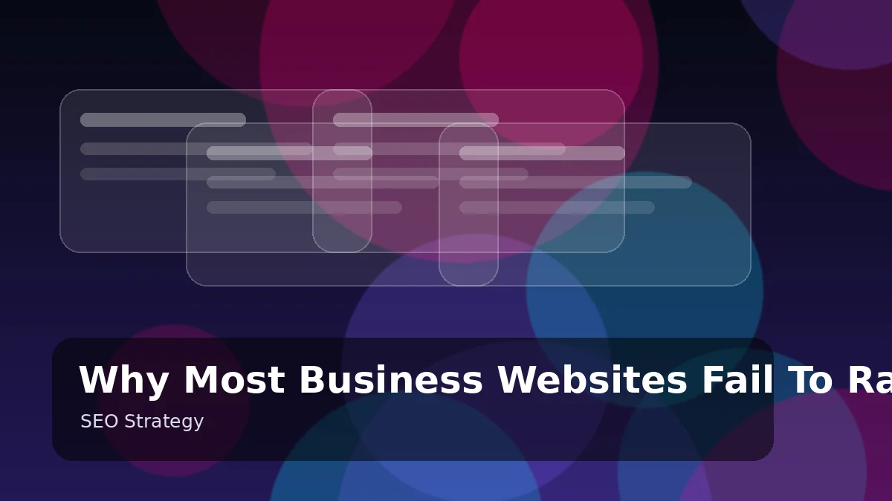
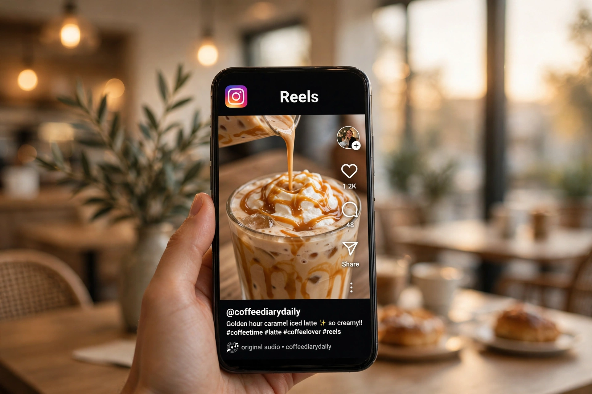
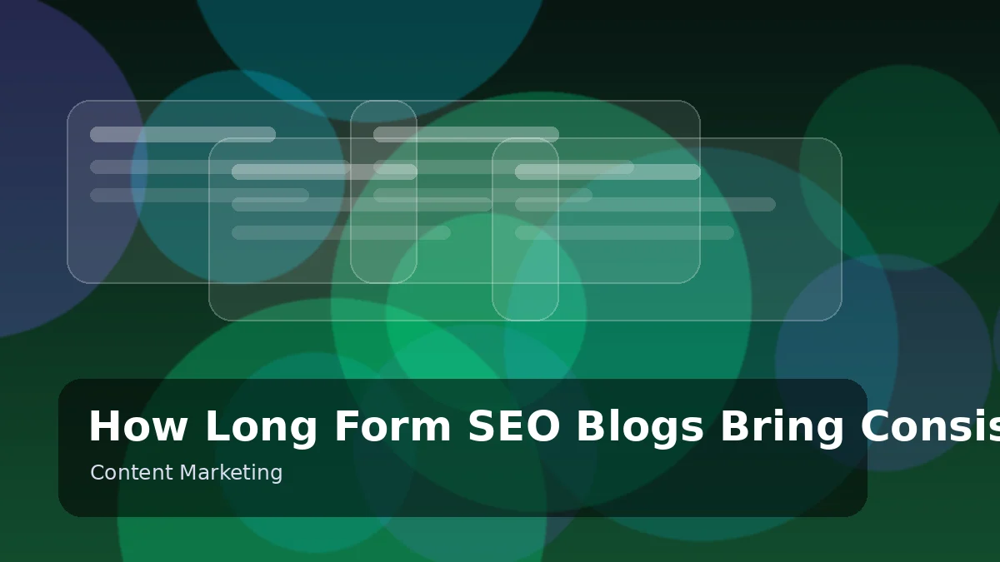
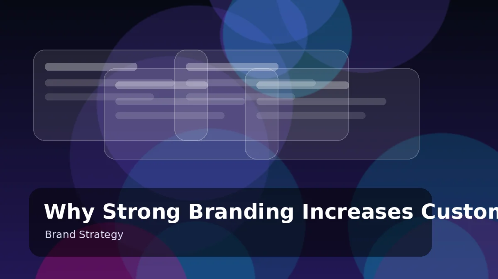
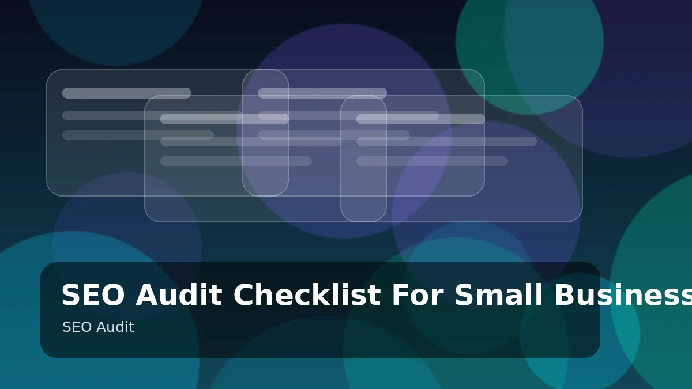
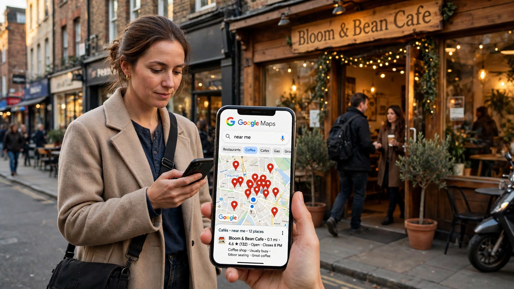
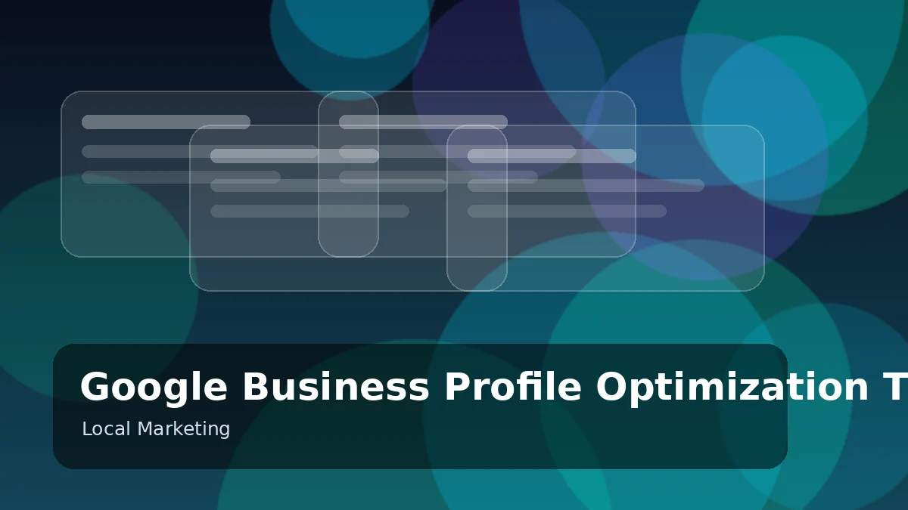
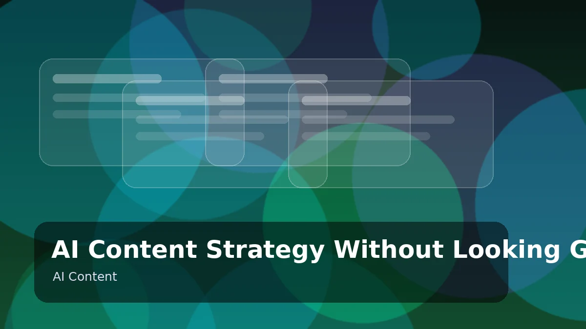
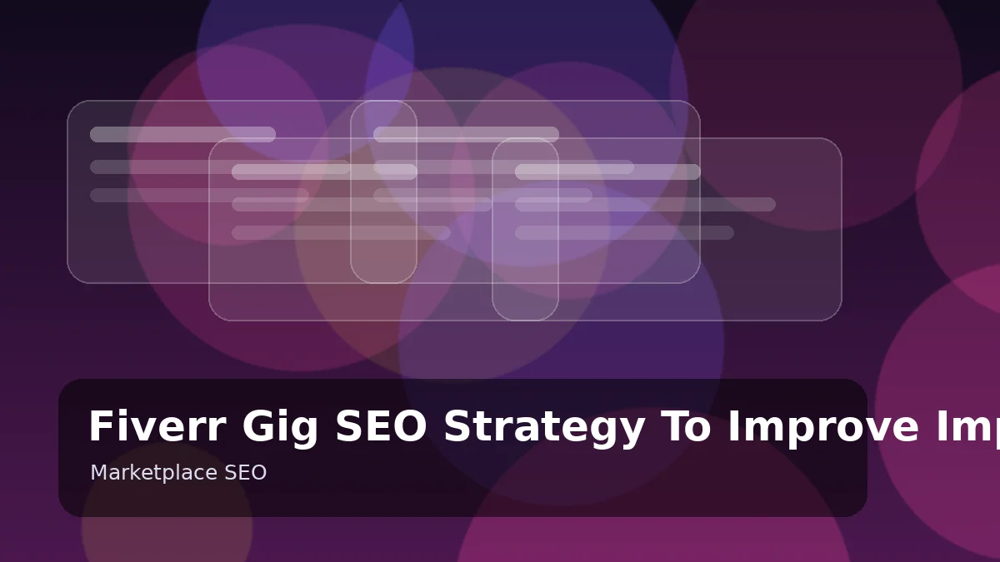
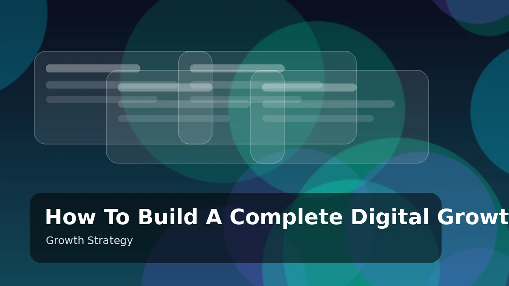

Most websites fail because Google cannot clearly understand their purpose, audience, content depth, and authority.
Read Article →
Instagram growth depends on fast hooks, watch time, searchable captions, and repeatable content systems.
Read Article →AI automation reduces repetitive work, improves response time, and helps businesses create systems that scale.
Read Article →YouTube growth depends on CTR, retention, thumbnails, search intent, and consistent video packaging.
Read Article →TikTok can help small brands reach large audiences when short-form content is structured correctly.
Read Article →Landing pages convert when the offer is clear, proof is visible, and the next action is simple.
Read Article →Internal links help Google discover important pages and understand how your topics connect.
Read Article →
Long-form content helps websites rank for more keywords and build topical authority.
Read Article →
Strong branding makes a business memorable and trustworthy before a customer contacts you.
Read Article →Facebook ads work better when the creative, offer, targeting, and landing page are aligned.
Read Article →LinkedIn rewards practical insights, strong positioning, and professional consistency.
Read Article →Pinterest works like a visual search engine and can bring long-term traffic.
Read Article →WhatsApp improves conversions because it creates fast and direct lead communication.
Read Article →
An SEO audit finds technical, content, and authority issues that block growth.
Read Article →A content calendar helps brands post consistently with purpose and direction.
Read Article →Personal branding helps freelancers attract better clients and build trust faster.
Read Article →Fast websites improve user experience, trust, and search performance.
Read Article →
Local SEO helps businesses appear when nearby customers search for services.
Read Article →Email funnels convert visitors into leads through education and follow-up.
Read Article →Short-form videos work best with strong hooks, fast pacing, and clear calls to action.
Read Article →Meta ad performance depends on first impression, message clarity, and visual contrast.
Read Article →
A strong Google Business Profile helps local customers find and trust your business.
Read Article →SEO blog writing is about matching search intent and giving useful complete answers.
Read Article →
AI content works better with human experience, examples, editing, and brand voice.
Read Article →Ecommerce SEO improves product visibility through categories, descriptions, links, and reviews.
Read Article →Dribbble can attract clients when projects use strong titles, tags, and case study style descriptions.
Read Article →
Fiverr SEO depends on keywords, CTR, reviews, visuals, and buyer relevance.
Read Article →Website copy should explain the problem, solution, proof, and next step clearly.
Read Article →Social proof reduces risk and helps visitors feel confident before buying.
Read Article →
A growth system connects SEO, social media, landing pages, content, and follow-up.
Read Article →The blog covers SEO strategy, AI automation, social media growth, YouTube and TikTok marketing, branding, content strategy, and digital growth systems — practical guides written for business owners, freelancers, and marketers.
New articles are published regularly, covering both evergreen strategies and current platform changes. Each guide is written to stay useful long-term, with updates when major algorithm or platform shifts happen.
Yes. Readers can suggest topics through the contact section or WhatsApp. Popular requests and common client questions often become full guides, so your suggestion could be published next.
Articles may not be republished in full without written permission. You are welcome to quote short excerpts with clear credit and a link back to the original article on this website.